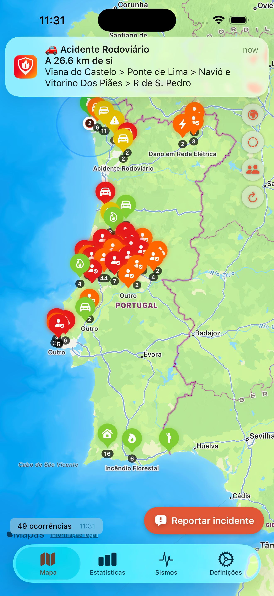
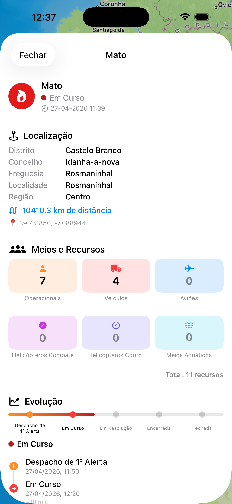
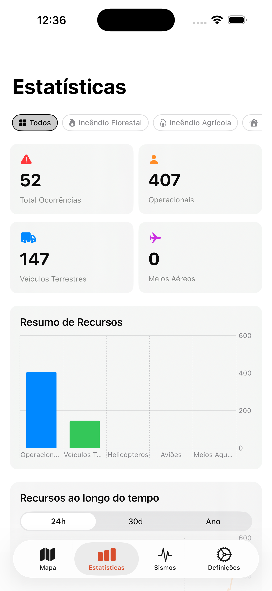
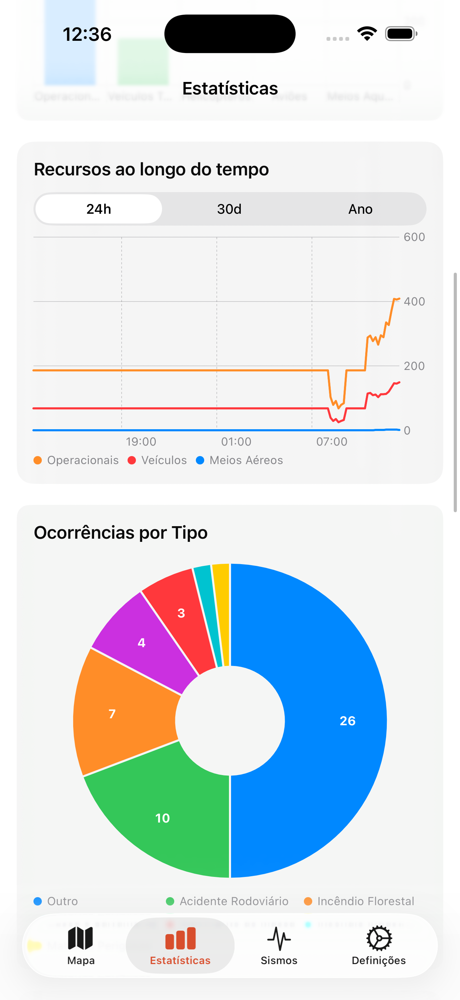
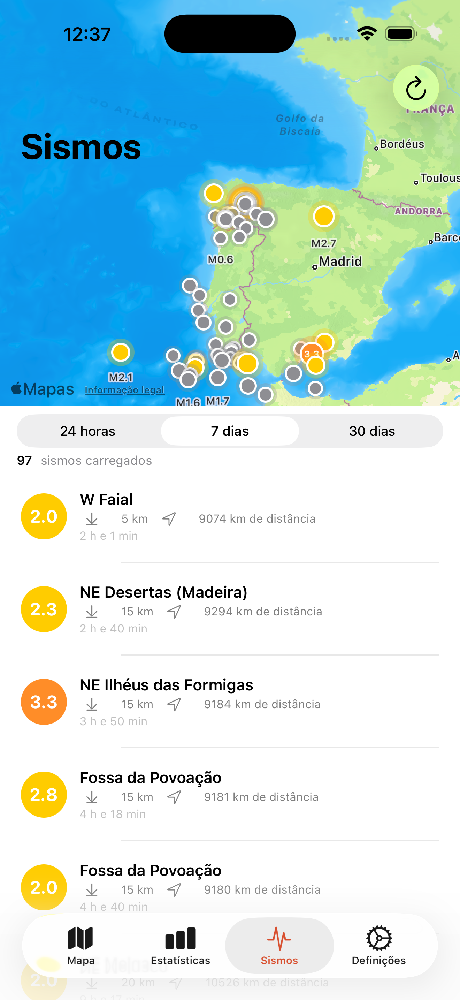
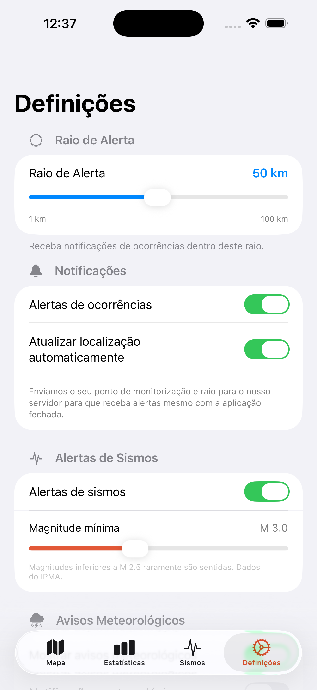
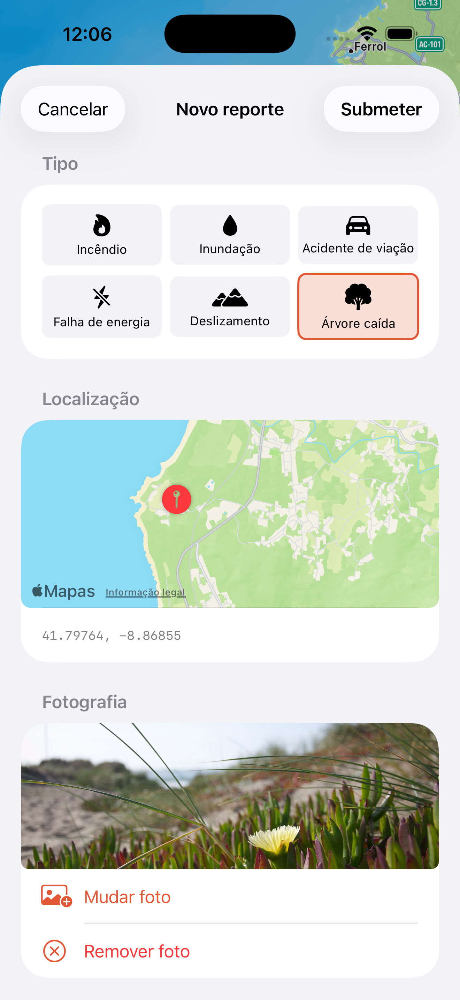
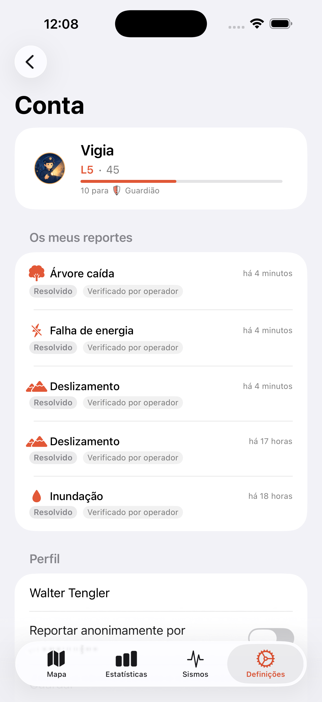

Die App im Überblick
Echtzeit-Karte, Bürgermeldungen, Statistiken, Erdbeben und Push-Warnungen — alles an einem Ort.






Bürgermeldungen Neu
Einen umgestürzten Baum, einen Stromausfall oder eine gesperrte Straße gesehen? Melden Sie es in Sekunden und helfen Sie Ihrer Community. Mit Apple oder Google anmelden, Vorfallstyp auswählen, Foto anhängen — und Ihre Meldung erscheint auf der Karte aller Nutzer.


Sie können jederzeit anonym melden. Alle Meldungen werden von Operatoren moderiert, um die Verlässlichkeit zu wahren. Verifizierte Meldungen erhöhen Ihren Vertrauenswert; ungültige senken ihn.
Funktionen
Interaktive Karte
Sehen Sie alle Vorfälle auf einer interaktiven Karte. Filtern Sie nach Typ und tippen Sie auf einen Marker für die Details.
Push-Warnungen
Erhalten Sie Benachrichtigungen, wenn neue Vorfälle in Ihrer Nähe auftreten. Konfigurieren Sie den Warnradius nach Ihren Wünschen.
Bürgermeldungen
Melden Sie Beobachtungen aus Ihrer Umgebung — umgestürzte Bäume, Überschwemmungen, Stromausfälle — mit Foto und Standort. Mit Apple, Google oder anonym.
Reputationssystem
10 Helden-/Wächter-Stufen — vom Zivilisten bis zum Mythischen. Jede vom Operator verifizierte Meldung hebt Ihren Vertrauenswert und schaltet neue Abzeichen frei.
Erdbeben in Echtzeit
Offizielle IPMA-Erdbebendaten für das portugiesische Festland, Madeira und die Azoren, ergänzt durch weltweite USGS-Daten. Karte und Verlauf für 24 h, 7 oder 30 Tage, mit Push-Warnungen ab der von Ihnen gewählten Magnitude.
Live-Statistiken
Sehen Sie aktive Vorfälle, Einsatzkräfte, Fahrzeuge und Luftmittel im ganzen Land — mit Diagrammen zur zeitlichen Entwicklung.
Eingesetzte Mittel
Detaillierte Informationen zu Feuerwehrleuten, Fahrzeugen und Luftmitteln bei jedem Vorfall — mit deren Entwicklung seit der Alarmierung.
Standortbezogen
Zentrieren Sie die Karte auf Ihre aktuelle Position und sehen Sie die nächstgelegenen Vorfälle. Ihr Standort verlässt das Gerät niemals ohne Ihre Zustimmung.
3 Sprachen
Verfügbar auf Portugiesisch, Englisch und Deutsch.
Datenquellen
ANEPC / ProCiv
Offizielle Daten der portugiesischen Behörde für Notfälle und Zivilschutz zu Vorfällen im gesamten Staatsgebiet.
IPMA — Portugiesisches Institut für Meer und Atmosphäre
Offizielle seismische Daten für das portugiesische Festland, Madeira und die Azoren, regelmäßig aktualisiert.
USGS — United States Geological Survey
Weltweite Erdbebenabdeckung als Ergänzung zu IPMA-Daten — für Warnungen zu Erdbeben überall auf der Welt.
Bürgermeldungen
Alltagsereignisse, gemeldet von authentifizierten Nutzern und moderiert durch Operatoren. Nutzer werden über ihre Reputationsstufe identifiziert, um die Verlässlichkeit zu wahren.
Voraussetzungen
- iOS 18.0 oder neuer
- iPadOS 18.0 oder neuer
- macOS 15.0 oder neuer
Support
Kontakt
Fragen oder Feedback? Schreiben Sie an walter.tengler@gmail.com
FAQ
Alerta verwendet offizielle Daten des portugiesischen Zivilschutzes. Die Daten werden regelmäßig aktualisiert. Die App dient ausschließlich zu Informationszwecken.